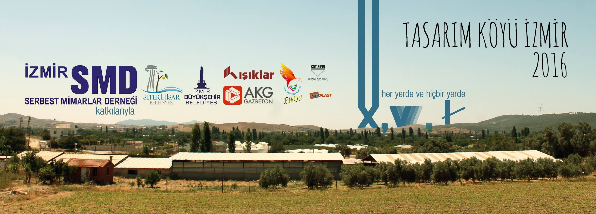
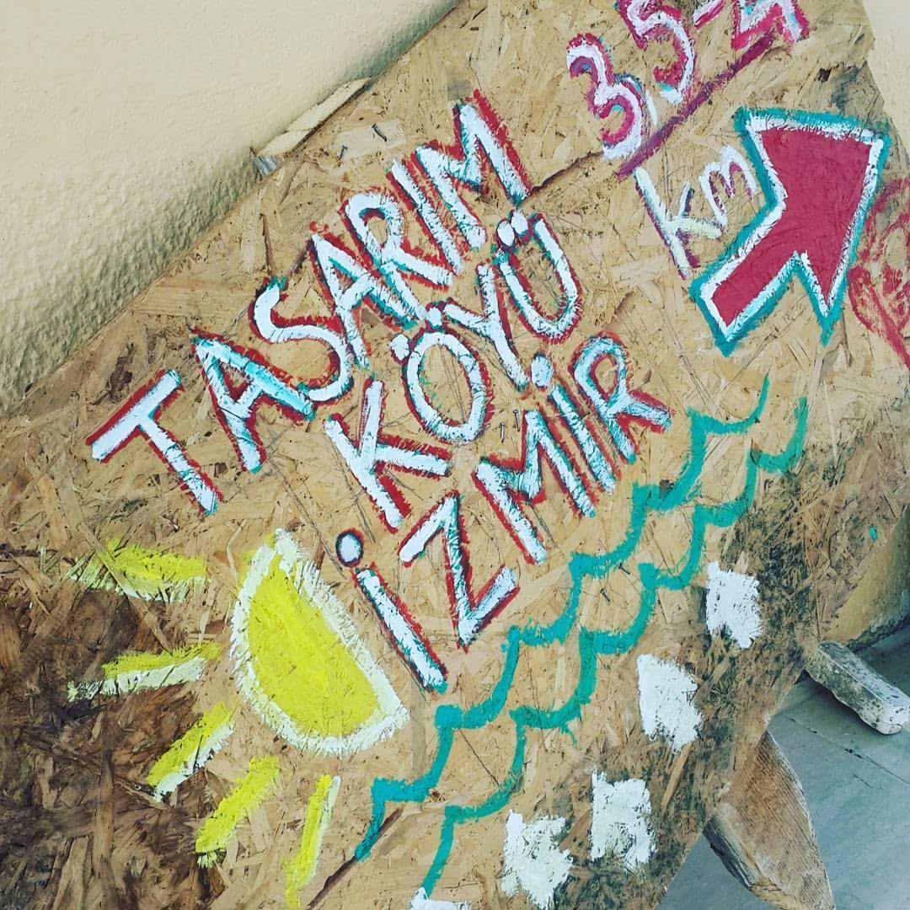
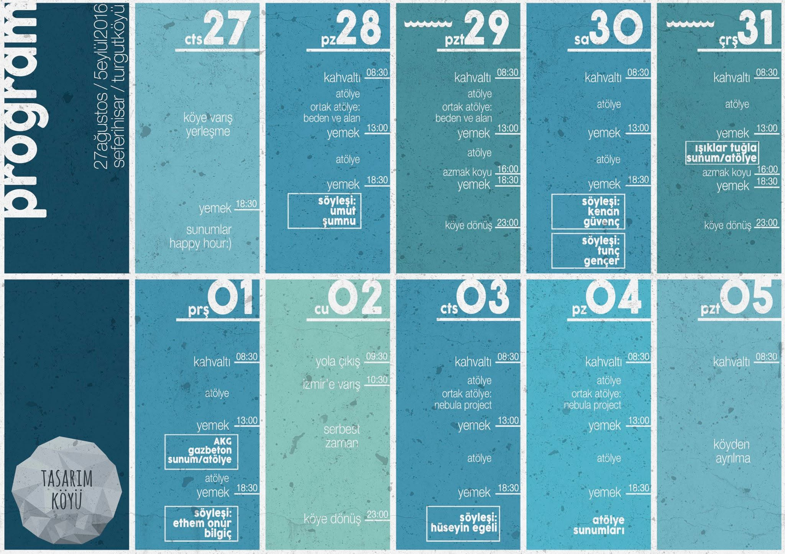
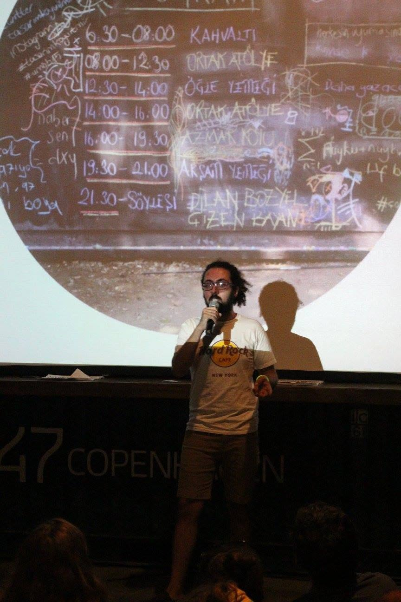
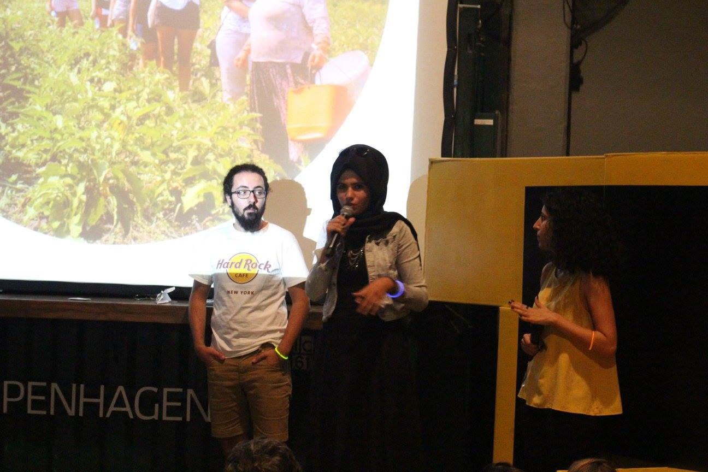
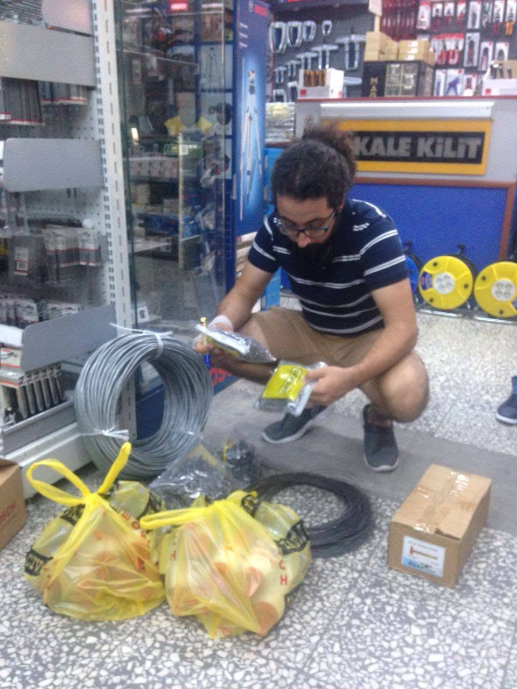
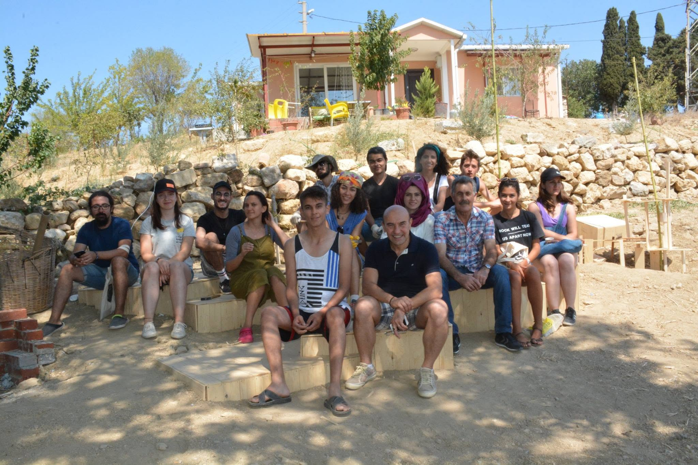
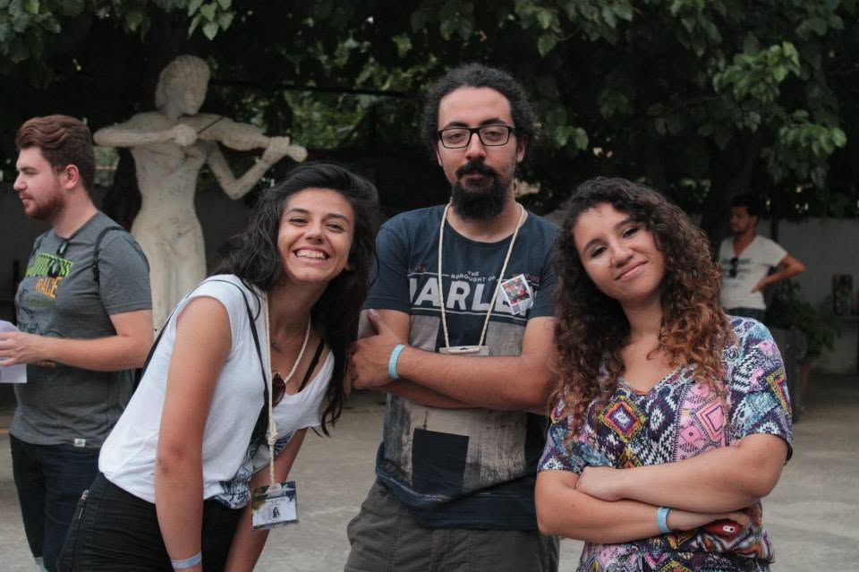
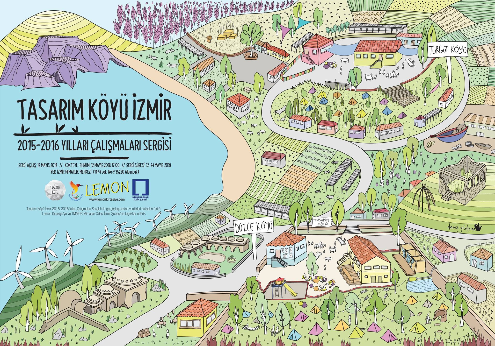

Tasarım Köyü İzmir came back for a second edition in 2016 — no longer tied to the national ÜMOB meeting, just the format standing on its own under the tagline "her yerde ve hiçbir yerde" ("everywhere and nowhere"). It ran 27 Ağustos – 5 Eylül 2016 (August 27 – September 5, 2016) at Turgutköyü, Seferihisar.


A real program
This time the whole week was mapped out day by day: shared morning and afternoon workshops on the theme "Beden ve Alan" (Body and Space), a trip to Azmak Köyü, sponsor-run sessions from Işıklar Tuğla and AKG Gazbeton, a second workshop track called "Nebula Project," and evening talks from Umut Şumnu, Kenan Güvenç, Tunç Gençer, Ethem Onur Bilgiç, and Hüseyin Egeli.



Getting the village ready
Same as the year before, none of it ran on ideas alone — sourcing wiring, fixings, and supplies from İzmir's hardware shops in the days before the village opened.

On site at Turgutköyü
A shared house, hand-built seating and steps, and a mixed group of students, practicing designers, and local hosts working side by side for the length of the program.


Afterward: the exhibition
Two years later, the work from both editions came back together. Tasarım Köyü İzmir 2015–2016 Yılları Çalışmaları Sergisi opened on May 12, 2018 and ran through May 24, 2018 at İzmir Mimarlık Merkezi — a full-circle moment for something that started as a whiteboard sketch.

More on the project: